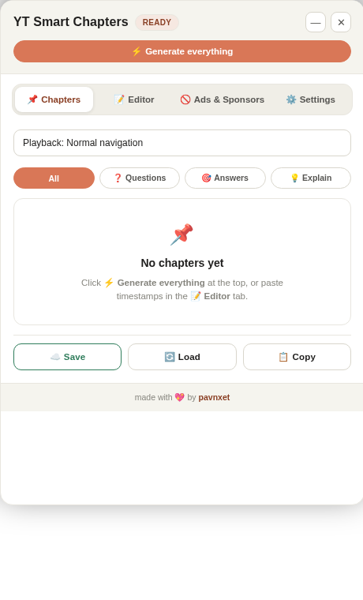
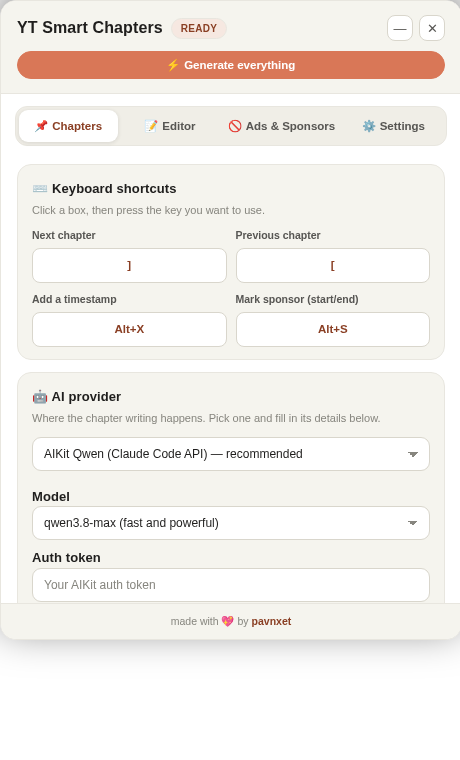
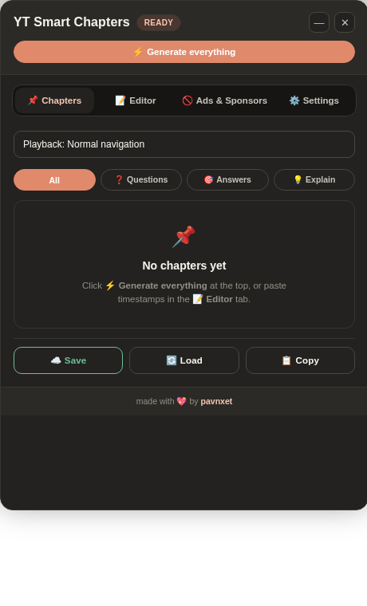

YT Smart Chapters Pro reads a lecture's transcript and writes a clean, timestamped chapter list for you — with the questions, the correct-option reveals, the explanations, and the sponsor segments all marked. One click. Any length of video.
Free and open source. Bring your own AI key — or use the free prompt toolkit with any chatbot.

Built for students and exam aspirants who live in 2–3 hour videos.
Send the transcript to AIKit Qwen, OpenRouter, or any OpenAI-compatible endpoint and get chapter names back.
For MCQ lectures, it marks where each question starts, where the option is revealed, and where the explanation begins.
Chips for All, Questions, Answers and Explain so you can revise exactly what you need.
Long transcripts are chunked automatically and merged back into one clean, numbered list — nothing gets truncated.
Detects sponsor reads, self-promo, intros, outros and filler — and can upload them to SponsorBlock for everyone.
Save chapters to your own Turso database and reload them on any device without spending AI credits again.
Optionally posts a tidy, timestamped comment under the video when you save.
Jump between chapters with a key, loop a hard section, or use the floating mini player.
A calm light/dark interface that follows YouTube's own theme, in real time.
The dashboard follows YouTube's own theme in real time — no page reload, and your settings, chapters and filters never reset when it switches.


Grab the latest zip from the GitHub repository and unzip it to a folder you'll keep.
Go to chrome://extensions/ and switch on Developer mode (top right).
Click Load unpacked and select the unzipped folder — the one containing manifest.json.
Head to any YouTube video and click the extension icon. The dashboard slides in from the right.
Works in Chrome and other Chromium browsers (Edge, Brave). No build step and no dependencies.
The extension reads the transcript, writes the chapters and finds the ad segments in one pass. Prefer to do it by hand? Use the Editor tab.
Every chapter is clickable and jumps the video to that moment. Use the filter chips to see only questions, answers or explanations.
Save writes to your cloud database; Load brings it back; Copy puts the list on your clipboard for notes or a YouTube description.
In Ads & Sponsors, scan the transcript and upload the segments to SponsorBlock so everyone can skip them.
| Action | Default key | What it does |
|---|---|---|
| Next chapter | ] | Jump to the next timestamp |
| Previous chapter | [ | Jump to the previous timestamp |
| Add a timestamp | Alt + X | Insert the current time as a marker |
| Mark sponsor | Alt + S | Press once for start, again for end |
Every key is rebindable in Settings → Keyboard shortcuts.
| Setting | Default | Notes |
|---|---|---|
| AI provider | AIKit Qwen | AIKit, OpenRouter, or any OpenAI-compatible endpoint |
| Generate chapters when a video opens | Off | Fully automatic mode |
| Auto save & comment | Off | Saves to your database and posts the comment |
| Auto upload ads to SponsorBlock | Off | Runs after the chapters finish |
| Post timestamps as a comment | On | Applies to manual and automatic saves |
| Completion sound | On | Built-in chime, custom URL, or your own file |
| Mini floating player | Off | A small bar with previous / next buttons |
You don't need the extension — or any API key — to get value out of this. Grab the transcript of any video, paste one of these prompts into ChatGPT, Claude, Gemini or a local model, and paste the transcript after it. Three jobs, three prompts.
A clean chapter list with a start time and a short, specific title for each segment.
You are an expert video editor. I will give you a transcript whose lines already carry timestamps. Produce a chapter list. Rules: - Each chapter = a start timestamp + a short, specific title (3-7 words) naming the topic covered from that timestamp until the next chapter begins. - Break only at genuine conceptual boundaries: a new idea, definition, sub-topic, method, worked example, or a shift from theory to practice. Not at every pause. - Merge or drop filler (greetings, intros, sponsor reads, recaps); fold short remarks into the nearest real chapter. - Use the start timestamp of the FIRST line of that segment. - Use only timestamps that actually appear in the transcript. Never estimate, round or invent one. - Format timestamps as MM:SS (use HH:MM:SS only if the video runs over an hour). Never write 04:46:00. - Keep titles in the transcript's language. Aim for about 8-20 chapters on a 20-60 minute video - do not over-segment. Output: a list like - 00:00:12 - Introduction and scope of the theory - 00:02:40 - Core definitions Then add, under clear headings: a one-line summary per chapter; the key terms or definitions introduced; a tag per chapter ([Concept] / [Example] / [Derivation] / [Recap]); and the 3 chapters most important for revision. Transcript: <paste the transcript here>
Every part worth skipping, labelled and merged into clean intervals.
Act as an expert educational video editor and SponsorBlock segment-extraction specialist. From the timestamped transcript below, find every portion that should be REMOVED or SKIPPED and label it with exactly one category: - SPONSOR - paid promotions, product placements, brand mentions. - SELFPROMO - channel merch, memberships, paid courses, social links. - INTERACTION - asking to like, subscribe, follow, comment, ring the bell. - INTRO - non-educational opener, channel bumper, greeting chatter. - OUTRO - end credits, thank-yous, goodbye cards. - FILLER - off-topic tangents, long chit-chat, technical difficulties. Rules: - Work only on removable-segment extraction. Do not output chapters or question timestamps. - Merging: if two or more removable segments run back-to-back (one ends as the next begins, or with only a few seconds between), merge them into ONE continuous segment from the start of the first to the end of the last, even across different categories. Give the merged segment the dominant category by priority: SPONSOR > SELFPROMO > INTERACTION > INTRO > OUTRO > FILLER. - In the Reason column, name the merged elements (e.g. "Intro + Sponsor"). - Use only timestamps that appear in the transcript. Format MM:SS (HH:MM:SS only if over an hour). Output this table: | # | Start | End | Category | Reason | | - | ----- | --- | -------- | ------ | | 1 | 01:15 | 02:40 | SPONSOR | Intro + Product promotion | Then immediately after, the automation output - only the merged intervals and dominant category, one per line: [MM:SS]-[MM:SS] CATEGORY If nothing is removable, return only: NO REMOVABLE SEGMENTS FOUND Transcript: <paste the transcript here>
For exam-prep videos: index every question, its answer reveal and its explanation.
Act as a high-precision MCQ timestamp extractor. From the timestamped transcript below, find every distinct multiple-choice question, problem-solving item, or question discussion and return its timestamps. For each question, kept in video order, capture: - Question Start - where the question begins. - Correct Option Timestamp - where the correct option is revealed or highlighted, or N/A. - Answer Start - where the detailed solution or explanation begins, or N/A. - Correct Option - a single letter (A, B, C, D) or Unclear. Rules: - Use only timestamps that appear in the transcript. Never guess. - If a timestamp is missing write N/A; if the option is unstated write Unclear. - Ignore rhetorical questions and follow-up chatter - only genuine exam questions count. Output ONLY this table - no preamble, no code fences: | Q# | Question Start | Correct Option Timestamp | Answer Start | Correct Option | | -- | -------------- | ------------------------ | ------------ | -------------- | | Q1 | 04:46 | 06:54 | 05:07 | B | Transcript: <paste the transcript here>
Open the video → … More under the title → Show transcript. Click the transcript panel, select all, and copy. It already carries timestamps.
Install it, open a video, and press 📜 Get transcript in the Editor tab. It fills the transcript in for you, ready to copy.
The full skill, with all three prompts, is in the repo at docs/toolkit/.